Hands 和了役。
（１）八仙人
七福神というめでたい仙人衆がいる。この元ネタ？は中国の八仙人（女性１人に男性７人の仙人衆）。この八仙人が、日本へ伝わってから１人減って七福神になった。なぜそうなったのかよくワカランが、たぶん日本と中国の数字に対する感覚の違い。でも今回の話には関係ないので、分からなくても構わない。（^0^；
この八仙人は中国では人気のあるキャラクターだから、いろんな場面で何かと登場する。下図は四仙人が麻雀をしていて、残りの四仙人が観戦しているという図案の中国製の古いポスター。
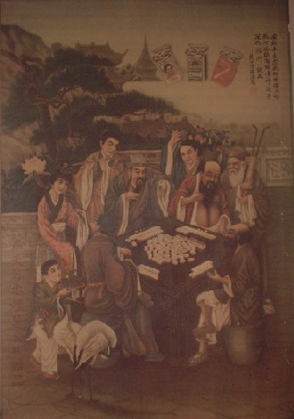
場面は丁度東家の曹國舅が単騎をツモアガリしたところ。
ツモ
のみキックのどうでもいい手。ところが他の３仙人の手が面白い。
南家 呂 同賓（ろどうひん）
西家 李 鐵拐（りてっかい）
北家 鐘離 権（しょうりけん）
つまりが東家以外の手にわたっていたならば、いずれも大物手だったというわけである
この八仙人、日本で七福神を知らない人がいないように、中国人なら誰でも知っている。ただ日本の七福神は船に乗っているだけだが、八仙人は孫悟空を味方にして竜王と闘かったりする民話が伝承されている。まず八仙人は、次の８人。
李 鉄拐（り てっかい) 鐘離 権（しょうり けん) 別名・漢鐘離（かんしょうり）
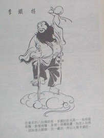 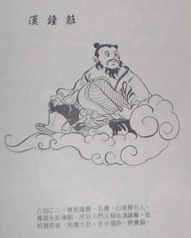
張 果老（ちょうかろう) 呂 洞賓（ろどうひん)
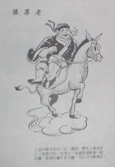 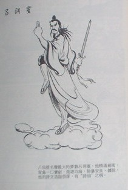
曹 国舅(そうこくしゅう) 漢 湘子(かんしょうし)
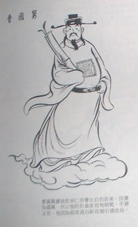 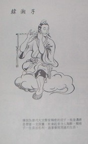
藍 采和(らんさいわ) 何 仙姑(かせんこ)
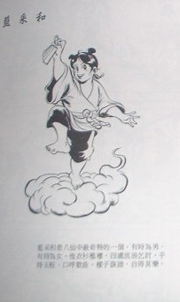 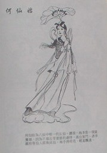
中国の民話といえば西遊記が著名であるが、この他に東遊記、南遊記、北遊記という小説があり、併せて四遊記と称する。西遊記は別格として、それ以外では東遊記（別名「上洞八仙伝」、または「八仙出処東遊記伝」)が面白い。長すぎるので全文を掲載するわけにゆかないが、ストーリーだけ簡単にご紹介する。
あるとき八仙人が海の彼方で開かれる竜華会(りゅうげえ＝仙人の宴会)に参加する事になった。ただ空を飛んでいったのでは面白くないというので、船の代わりにそれぞれの宝物に乗って渡海する事にした。この時、ある仙人の乗った玉板を東海竜王の長男が見て欲しくなり、いきなり海底から現れ奪い取った。
怒った八仙人は東海竜王を攻撃して玉板を取り返した。散々な目にあった東海竜王は弟の南海竜王・西海竜王・北海竜王の助けを求めて反撃したが、すぐに逆襲された。
そこで竜王側は争いの原因を隠し、「急に八仙人が竜宮城に攻めてきた」と玉帝に訴えた。怒った玉帝は関雲長(かんうんちょう)、趙子竜(ちょうしりゅう)、馬超(ばちょう)（いずれも三国志の英雄）を元帥として六十万の天兵を派遣した。そこで八仙人も孫悟空を味方にして一大決戦となった。しかし最後に観音菩薩が仲裁し争いは収まった。
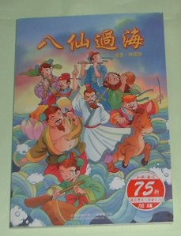 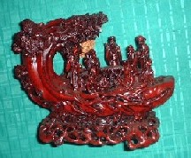
※八仙人の置物。
そして中国麻雀には、この民話をモチーフにした「八仙乗風過海」、通称「八仙過海(パーシェンコーハイ)」というアガリ役まである。
＊雀頭はでも可。
or を東海竜王・南海竜王、８の三同刻を八仙人、を海に例えたもの。
こんなに人気のある八仙人であるから、中国麻雀には八仙過海と似たような役が他にもある。
まず単なる８の三同刻は「八仙下凡(パーシェンシャーハン)」と呼ぶ。
八仙下凡でアガったとき、花牌を２座(春夏秋冬・梅蘭菊竹の８枚すべて)集めていると「八仙聚首(パーシェンチューシュ)」。※「聚」は“集まる”の意（聚楽第の「聚」)、八仙聚首は「八仙人が８人集まった」の意。
８の三同刻に、の刻子が加わると「八仙戯鳳(パーシェンシーフェン)」。
戯鳳(シーフェン)の鳳がであることは簡単に分かる。ではなぜ「戯」がなのか。実は「(シー)」と「戯(シー)」は同音なのだ。
を雀頭にする代わりに
まだまだあるぞ八仙人。八仙人が金亀()と戯れると「八仙戯金亀(パーシェンシーチンクイ)」
八仙人が北斗七星と闘えば「八仙闘北斗(パーシェン トーペートー)」。もちろんを北斗七星にたとえたもの。
う〜ん、でもなぜ八仙人が北斗七星と闘わなければならないのか、そこんところがよくワカラン(^0^；
RICH 日付：2002/07/13(Sat)
私は、今、八仙人について調べているんです。
中国といえばやっぱりマージャンですよねぇ。私は、あまり詳しいほうでないんで大変参考になりました。
ところで「八仙人〜」ですけど、中国において北斗七星は、「竜」を意味するそうです。
あさみ 2002/07/13(Sat)なーるほろ。北斗七星は龍、すなわち東海竜王を表しているのか。これで話がつながった。RICHさん、ありがとう〜(^-^)/